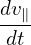
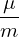

Let us analytically estimate the bounce frequency of deeply trapped particles. The time evolution of the paralell velocity of a guiding center is given by Eq. (2), i.e.,
|
| (85) |
which can be approximately written as
|  = −b ⋅∇B, |
which can be further written as
|
| (86) |
where dl is the arc lengh along the magnetic ï¬eld. In a large aspect ratio tokamak with circular flux surfaces, the magnetic ï¬eld can be written approximatedly as
 | (87) |
The equation of magnetic field is written
 | (88) |
which can be written
 | (89) |
Using Eqs. (89) and (87), the paralel derivative of the magnetic ï¬eld is written as
![dB B𜃠dB B 𜃠B0 r
-dl = rB-d𝜃-= rB-[1-+-(r∕R--)cos𝜃]2R--sin𝜃,
0 0](guiding_center_motion111x.png) | (90) |
Plug this into equation (86), then we obtain
![d2l v2 B B r v2 B 1
--2 = −-⊥---𝜃--------0-----2 --sin𝜃 = −-⊥--𝜃----sin𝜃
dt 2B rB [1+ (r∕R0)cos𝜃] R0 2 B0 R0](guiding_center_motion112x.png) | (91) |
Consider deeply trapped particles (particles are trapped in a very small region near the low-ï¬eld-side midplane), i.e., 𜃠≈ 0, then we have sin𜃠≈ 𝜃. Using this, the above equation is written as
|
| (92) |
Assume the orbit is along the magnetic ï¬eld line (i.e. zero-width orbit approximation), then the equation of magnetic ï¬eld (89) is also satisï¬ed by the orbit. In the linear approximation, we have 𜃠≈ Bğœƒâˆ•(Br)l. Using this in Eq. (92), we obtain
 | (93) |
Using the deï¬nition of safety factor, q = rB0∕R0B𝜃, the above quation is written
|
| (94) |
Define
|
| (95) |
(for deeply trapped particles, the variation of v⊥ during one poloidal period is small, and thus can be considered constant, and thus ωb can also be considered constant), then Eq. (94) is written
 | (96) |
which indicates that the motion of a deeply trapped particle is a harmonic oscillation with an angular frequency ωb. Equations (95) and (96) agree with Eqs. (3.12.3) and (3.12.4) in Wesson’s book “Tokmaks”[2]. I have test the accuracy of formula (95) by comparing it with the numerical results, which indicates the formula can usually give a reasonable estimation of the bounce frequency (for example, 28kHz is obtained numerically while the analytical formula gives 24kHz for a not very deeply trapped orbit).